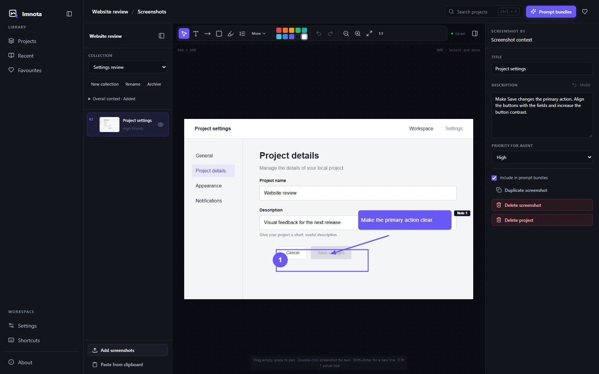
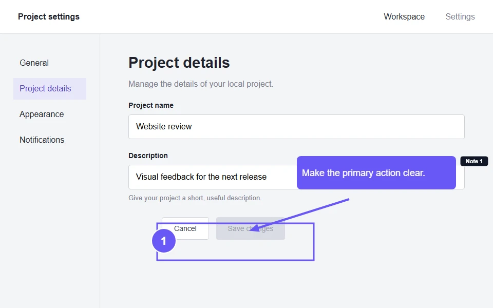
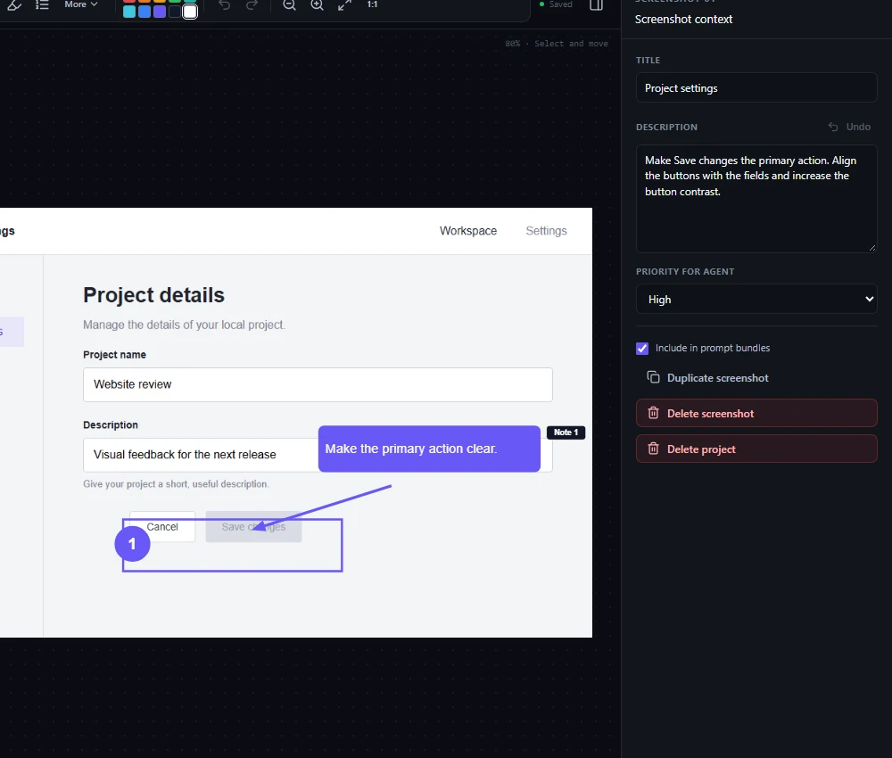

Make visual feedback precise
Point directly at the part of a screen that needs attention. Keep editable annotations separate from the original screenshot.
Annotate what matters, add the missing context, and hand your coding agent a prompt bundle it can actually use.
Local-first desktop app. Open source. No account required.

# Settings review
## Overall context
Improve clarity and keyboard accessibility in the project settings.
Priority for agent: High
Make Save changes the primary action. Align the buttons with the fields and increase the button contrast.
Give the picture a point.
A raw screenshot leaves the important parts implicit. What is wrong? What should change? Which part matters? Imnota helps you make it explicit, right in your local workflow.


From seeing it to explaining it.
Import, paste or drag in PNG, JPEG or WebP screenshots.
Add arrows, lines, shapes, highlights, text, callouts, steps or sensitive-area masks.
Add collection context, screenshot descriptions and agent priority.
Export timestamped Markdown and high-resolution PNG prompt bundles.

Point directly at the part of a screen that needs attention. Keep editable annotations separate from the original screenshot.
Organize related screenshots into local collections. Add shared context, then archive and restore collections as the work changes.
Copy Markdown, image or both. Large collections split automatically into readable prompt bundles.
The receiving editor chooses which clipboard formats it accepts. Separate copy actions are always available.
Local-first, by design.
Plain files you can copy, back up and version-control. Keep your screenshots and context together, in a workspace you choose.
Ready when you are.
One command to download the latest desktop build. Then make your first screenshot useful.
Browse all releasesMIT licensed. Yours to inspect.
An open-source screenshot annotation tool built with Electron, React and TypeScript. Desktop targets for Windows, macOS and Linux. Read the code, build it yourself or contribute a focused improvement.
No. Imnota’s core workflow uses local files and has no cloud sync or cloud storage dependency. You decide where to paste or share an exported bundle.
No. Imnota has no account requirement and no built-in AI provider connection. It prepares context for the assistant or coding agent you already use.
Imnota’s development and packaging targets are Windows, macOS and Linux. Check the latest release for available desktop downloads.
A fresh, timestamped Markdown and high-resolution PNG set for the current collection. The Markdown includes collection context, screenshot descriptions, agent priorities and text or callout notes. Large collections may split automatically. You can copy Markdown, image or both, depending on what your receiving editor accepts.
Yes. You need Node.js 20+, Corepack and a platform-supported Electron environment. Follow the manual build instructions or the development README.
The current release is not Apple-notarised. The README explains how to open it through System Settings, Privacy & Security, Open Anyway. Read the macOS installation guidance. Do not disable Gatekeeper.